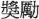
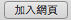
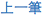

num_of_records = 50308 scroll_times = 16 def test(): hover() doubleClick() click() click() click() def push_record_to_github(): click() type("c", KEY_CMD) # copy url switchApp("Terminal") type("pbpaste >> record.txt") type(Key.ENTER) type("echo '' >> record.txt") type(Key.ENTER) type("git add record.txt") type(Key.ENTER) type("git commit -m 'add new record by sikuli script'") type(Key.ENTER) type("git push -u origin master") type(Key.ENTER) switchApp("Safari") def check(): if exists(): hover() # for human beings to see sleep(1) push_record_to_github() return True return False # main program for n in range(num_of_records): sleep(4) # waiting for page loading while(not exists()): if check() is True: type(Key.END) # scroll to end break # and leave loop else: # not found, continue... type(Key.PAGE_DOWN) # scroll down click()